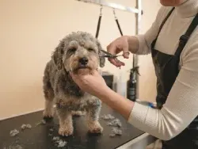
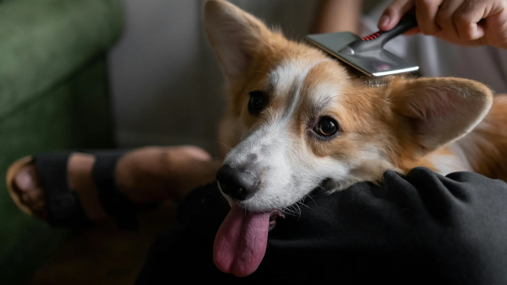
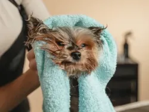
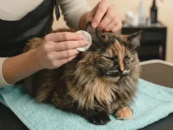
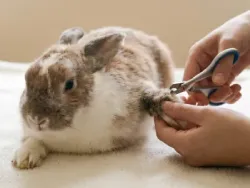

Trimmaus
Turkin ja rodun mukainen trimmaus saksilla, koneella tai nyppimällä.

Hyvin hoidettu turkki tukee lemmikkisi hyvinvointia. Tarjoamme ammattitaitoista, lajinmukaista ja rauhallista trimmauspalvelua kaikenlaisille turkeille ja persoonille.
Varaa trimmausaikaTrimmaamossamme jokainen lemmikki kohdataan yksilönä. Käytämme laadukkaita tuotteita ja varaamme riittävästi aikaa, jotta hoitohetki on mahdollisimman rauhallinen.
Turkin kunnossapito parantaa lemmikkisi elämänlaatua. Sen avulla niin turkki, kuin ihokin pysyvät terveinä ja lemmikilläsi on parempi olla. Säännöllinen trimmaus helpottaa turkin harjausta, pesua ja kuivausta kotona. Hyvin hoidettu turkki ei kerää niin paljoa pölyä tai roskaa, jolloin se pysyy arkenakin siistimpänä.

Turkin ja rodun mukainen trimmaus saksilla, koneella tai nyppimällä.

Perusteellinen pesu laadukkailla tuotteilla, föönaus ja harjaus poistavat irtokarvaa ja saavat turkin kiiltämään.

Puhdistamme korvat hellävaraisesti ja poistamme tarvittaessa ylimääräiset karvat korvakäytävästä tulehdusten ehkäisemiseksi.

Nopea ja turvallinen kynsienleikkuu hoitajan tekemänä. Meillä on paljon kokemusta myös aroista ja kynsienleikkuuta jännittävistä eläimistä.
Lopullinen hinta määräytyy lemmikin koon, turkin kunnon ja käytetyn ajan mukaan. Kaikki hinnat sisältävät alv:n.
| Palvelu | Hinta (alk.) |
|---|---|
| Pienet koirat < 10kg | 65,00 € |
| Keskisuuret koirat 10-25 kg | 85,00 € |
| Suuret koirat > 25 kg | 110,00 € |
| Toimenpide | Hinta |
|---|---|
| Kynsien leikkaus (hoitaja) | 25,00 € |
| Korvien puhdistus ja karvojen poisto | 30,00 € |
| Tassuhuolto (kynnet + tassukarvojen siistiminen) | 40,00 € |
Haluamme, että trimmaushetki on lemmikillesi mahdollisimman mukava. Tässä muutama vinkki onnistuneeseen käyntiin: